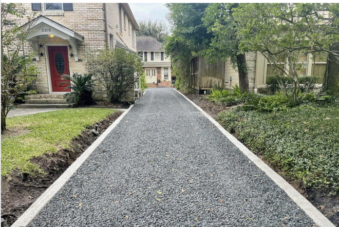

This project aims to scan parking spaces such as your own driveway and observes all cars that are on your driveway. Most home surveillance systems only detect motion, but this will detect the make, model, and license plate of the cars that are parked on your driveway. The program will also allow users to add cars to an authorized cars list so the car can park in the parking space without being flagged. The project will use Gemini APIs to detect the car information and display notifications if an unknown car is parked in the parking space.
